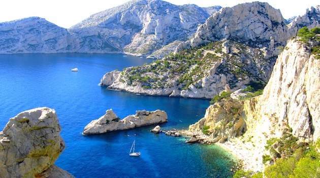

MUCEM
La singularité du Mucem est de retracer, d’analyser et d’éclairer, dans un même élan et un même lieu, les antiques fondations de ce bassin de civilisation, et les tensions qui le traversent jusqu’à l’époque contemporaine. D’être un lieu d’échange autour des enjeux méditerranéens.
Dans ses expositions comme dans sa programmation culturelle, il propose une vision pluridisciplinaire où se conjuguent anthropologie, histoire, archéologie, histoire de l’art et art contemporain, afin de montrer au public les diverses facettes du monde méditerranéen et de son dialogue permanent avec l’Europe.
Parc national des Calanques
Cette balade autour de Marseille est incontournable. À quelques minutes de la ville se trouve le parc national des Calanques, un lieu d’émerveillement et d’évasion. On ne se lasse pas de la vue sur les calanques, les plus belles étant Sorgiou, Port-Miou et Morgiou.
Le parc des Calanques, ce sont aussi de belles randonnées et de nombreuses activités sportives telles que kayak, canoë ou escalade. Alors si vous ne souhaitez pas rester à la plage toute la journée, vous avez l’embarras du choix !

Soirées à Marseille
Situé en plein cœur du centre-ville, le Cours Julien est l’un des quartiers les plus vivants de Marseille, de jour comme de nuit. C’est aussi le plus grand quartier consacré au street art en France, puisque ses murs sont tapissés de graffs et de fresques décoratifs réalisés par des artistes locaux.